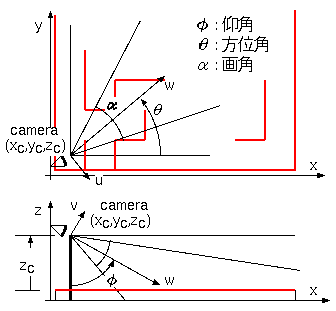
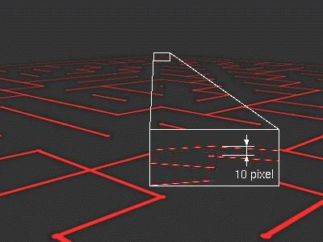
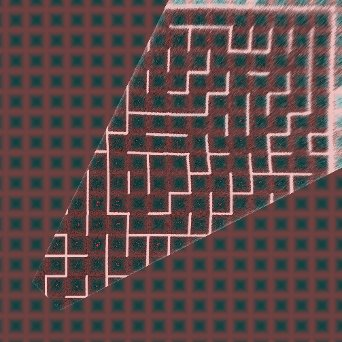

mm7-imgproc
迷路画像解析
カメラで撮影した画像から全迷路を解析する可能性を見るため、シミュレーション検討を行い、カメラ部の仕様を検討しました。以下、検討の過程を紹介します。
予備検討
初めに大会会場で撮った迷路の写真を加工することで、あたり検討をした。
実画像による予備実験
- 大会会場で撮影した迷路の写真を元に、gimpで射影変換を行ってみた。
オリジナル画像は水平2200画素、６Mpixelのデジカメで撮影した。
最も条件の悪い、迷路最遠区画の奥行き方向は13画素程度である。
- gimpで射影変換して迷路を真上から見た状態に変換してみる。
正方形からずれているのはレンズの歪曲収差と思われる。
人の目で見るとはっきりと壁の弁別が出来るが、画像処理で赤色を抽出して弁別可能だろうか?
- 上の画像にgimpのフィルタ（色要素・赤→しきい値）をかけて2値化した。
赤の色差画像にすることで壁の白黒を排除し、壁の上面だけを抽出できた。
うまく画像処理出来れば壁の判別が出来そうな感触が得られた。カメラの画素数は２M画素程度で良さそうである。
検討要素
６Mpixelのデジカメで撮った画像から全迷路解析が出来そうな感触が得られた。マイクロマウスの形にするにはいろいろな要素を検討する必要がある。
検討要素を挙げてみた。
- カメラ
- 解像度,レンズ画角,カメラ高さ
シミュレーションで画素数・カメラ高さ・画角のあたりをつけ、実写で確認 - 入手可能なカメラの探索
- USB Webcam ? Logitech C905m (2Mpix)など、AF、AE、zoom付で画質はよさそうだが USB UVCの扱いが問題(FTDI vinculum II なら可能か？)
- ai-tendo カメラモジュール（OV9655）SXGA(1280x1024)画素数不足か？
- Aptina CMOS chip MT9P401 5Mpix 2.2um 2592x1944 対角7.1mm DataSheet有り。コントローラを作る必要がある。
- レンズ
http://www.aitendo.com/product/1453
f=3.6mm f=6mm 有効像円不明(たぶん 1/3" 6mm)
- 解像度,レンズ画角,カメラ高さ
- 画像処理
- 撮影した画像を逆射影変換し、17x17の壁位置にフィッティング、壁有無の判別を行うアルゴリズム
- カメラ位置／姿勢から射影変換マトリクスを作る
- カメラ画像を加工。色差変換、射影変換、平滑化、ノイズ除去、etc
- 射影変換パラメータを変換後画像が正方格子上に乗るようにfit
- 撮影した画像を逆射影変換し、17x17の壁位置にフィッティング、壁有無の判別を行うアルゴリズム
- カメラのリフトアップ機構
- 必要な高さに持ち上げ、収納するための軽量で安定な機構
今回の画像処理の基礎である射影変換の検討から着手した。
カメラシミュレーション(準備)
カメラで迷路を撮影した画像を逆射影変換して迷路を復元する、一連の座標変換の定式化を行う。
カメラモデル
迷路を俯瞰して撮影するカメラのモデルを作る。
下図のように座標をとる。
|  図１ 迷路座標とカメラ座標の関係 | -{x,y,z} 座標の{x,y}平面に迷路を置く。迷路上面を z=0 とする。 -迷路のスタート地点（座標 xc,yc,zc）にカメラを置く。 -カメラは仰角Φ、方位角θの方向に向け、画角αの範囲を撮像する。 -カメラ座標 {u,v,w} の視線方向を w 軸とし、{u,v} 平面に迷路を見下ろした像を射影する。 仰角Φは z軸に平行に下を見る方向を基準とし、{x,y}平面に平行な方向に向けて回転する方向を正の角度とする。 方位角θはx軸方向を基準とし、上から見て反時計回りを正とする。 |
{kind=link}
カメラで撮影した画像を求める座標変換
{x,y,z} 座標に置いた迷路をカメラ座標 {u,v,w} に変換する。
・・・式１
{x,y,z} 座標をカメラ位置 {xc,yc,zc} に平行移動し Φ、θ の回転行列を掛けて {u,v,w} 座標に変換する。
カメラ座標に変換した迷路画像を {u,v} 平面に射影する。
カメラで撮影された画像が {u',v'} である。{u',v'} の撮像範囲は w で正規化されており、水平画角をαとすると、u' の範囲は ±tan(α/2) となる。
Φ=75°,θ=45°,α=40°,zc=250mm
の撮影画像シミュレーション
図２、 カメラ画像シミュレーション、ベクタ画像
撮影画像から迷路画像を復元する
カメラで撮影された {u',v'} 画像は大きく歪んでおり、これを逆射影変換により元の {x,y} 座標上の正方画像に復元する。
・・・式２
・・・式３
カメラ画像を求める変換行列の逆行列を用いて逆変換を行う。この変換行列は直交行列なので、逆行列は行列の転置になる。逆変換の後、{x',y'}平面に射影する。{x',y'}は正規化されており、カメラ高さzcを掛けて元のサイズに戻し、さらにカメラの{x,y}位置{xc,yc}の平行移動を行う。
上のカメラ画像(図２)から復元した迷路画像
黒線はカメラの視野範囲
画角40°ではスタート地点近傍の壁が視野外であり、カメラ高さなどを変えて複数回撮影する必要がある。
より広い画角にすると、最遠点の壁を分解するのが難しくなる。
図３、 カメラ画像から復元した迷路画像
カメラシミュレーション(画像シミュレーション)
ベクタ画像を用いて射影変換の確認を行った。次に、実カメラの画素数を想定したラスタ画像でシミュレーションを行い、カメラ高さや必要な画素数を見積もる。
センサーとレンズの想定
入手可能で、当たり検討で用いた画像に近い画像が得られそうなセンサーとして以下のセンサーを想定した。
- 想定センサー
Aptina CMOS MT9P401 5Mpix 2592x1944 対角7.1mm - 想定レンズ
http://www.aitendo.co.jp/product/1453 f=6mm 有効像円6mmくらい
想定センサー／レンズで水平画角40°、水平2000画素程度の画像が得られる
図４、 センサーとレンズ撮像範囲の想定
想定カメラでの撮影シミュレーション画像作成
x,y平面上に迷路パターンを置き、式１によってu',v'平面に射影変換し、2000x1500画素のビットマップ画像を作成した。迷路上面の赤いラインのみの画像である。赤いラインの形状を矩形ではなく、半値幅が12mmのコサイン2乗応答としてエリアシングを軽減した。
| 図５ 撮像シミュレーションビットマップ画像 | Φ=75°,θ=45°,α=40°,zc=250mm 最も遠方の１区画の奥行き方向が１０画素程度で撮像される。 壁上面の幅は1画素に満たない。実センサーでは赤画素のピッチは2倍になるのでさらに厳しくなる。 レンズの解像度は高くないと思われるので、ボケにより赤いラインの応答が広がり、エリアシングが軽減されるのは期待できるが、赤色の振幅は小さくなって弁別が難しくなる。 |
シミュレーション画像から迷路の復元
図５のビットマップ画像を2値化し、逆射影変換を行って、迷路画像を復元した。
計算の手順は以下の様になる。
- x,y迷路平面をラスタースキャンし、x,y座標を式１を用いてu',v'カメラ座標に変換する。
- 図５の画像から 1.で求めたu',v'の位置の画素値を取り出し、x,yの位置の画素値とする。
結果として逆変換されたx,y画像が得られる。
この理想状態のシミュレーション結果ではカメラから最遠点でも充分壁の判別が可能と思われる。
実カメラではレンズ解像度のなさやセンサーの赤色画素の少なさ、壁の白黒、センサーノイズなどの悪条件が重なるので簡単ではない。
図６ 復元画像
実カメラでの画像劣化に不安はあるものの、まずは想定したセンサーで、カメラ高さ250mm(壁面から)を出発点にしよう。
実画像による迷路復元の検討
前項で理想状態の迷路画像復元を行ったが、実際のカメラでは視線方向やカメラ位置、画角の精度はそれほど期待できない。特に仰角の誤差に対する復元画像の位置誤差は大きく、想定した設定で仰角0.2°の誤差が迷路1区画の位置誤差になる。
このため復元画像が迷路区画にフィットするように、射影変換パラメータを調整する必要がある。
縮小モデル迷路による画像撮影
実際のカメラの画像で検討するために、1/3サイズのモデル迷路を作り、デジタルカメラで撮影した。
モデル迷路はスチレンボードに紙を貼り、その上に赤いテープを貼ったものである。
カメラは前ページの画像シミュレーションに合わせ、Φ=75°,θ=45°,α=40°,zc=250mm に近づけるように設定した。
zcは迷路の縮尺1/3に合わせて 250/3mm に設置した。
取得した画像サイズは 2272x1704 である。
図７ モデル迷路撮影画像
モデル迷路画像からの迷路復元
上のカメラ画像(図７)を赤の色差画像にして2値化し、逆射影変換を行って、迷路画像を復元した。実画像では、カメラの回転と、レンズ歪曲歪みの補正が必要になった。
図８ カメラ補正パラメータ
|  図９、 図７モデル迷路画像からの復元画像 | 前ページで定義した Φ、θ、α、xc、yc、zc を手作業で微調整した。 これらのパラメータに加え、カメラの光軸まわりの回転 ρ、レンズの歪曲歪み d も調整しないと合わせ込めない。微調整した結果は以下である。 Φ=76.3°、θ=45.7°、α=37°、zc=250mm、xc=13.5mm、yc=11.0mm、ρ=0.7°、d=3% 歪曲歪み d は水平画像サイズ±１に正規化された画像の像高rに対し、r'=r*(1-d*r) に歪んだ画像が撮影されたものというモデルにした。 画像がうねっているが、モデル迷路の平面がわずかにうねっているためと思われる。 |
これを自動でフィッティングし、壁の有無を判定するアルゴリズムを開発する必要がある。
迷路復元画像からの壁情報検出
モデル迷路画像から手動でカメラパラメータのフィッティングを行ってみたが、これを自動化することを検討する。当初、復元画像を正方格子にフィットすることを考えたが、極めて難しく、断念した。
ここで、学生時代の友人が壁情報検出のアルゴリズムを検討してくれることになり、モデル迷路画像からほぼ正しく壁を検出できるところまで作り上げてくれた。
基本的に復元画像の壁の交点を逐次探索していくアルゴリズムであり、画像の歪みに格子点をフィットしていく方式である。
ただ、友人の検討環境は NI社のLabViewグラフィック言語であり、また計算量の大きなところもあって、そのままではマウスに移植できない。C言語に移植しつつ非力なCPUでも実用的な時間で解析が終わるくらいのアルゴリズムに落とし込む必要があった。
以下、友人のアイデアを元に、mm-7に実装した壁情報検出のアルゴリズムを紹介する。
壁情報検出アルゴリズム
- カメラ位置パラメータ(Φ,θ,ρ...)初期値で撮影画像を逆射影変換する。
- この段階ではカメラ位置誤差のため迷路の壁位置が正方格子からずれている。
- カメラの近傍の誤差は小さく、カメラからの距離にしたがって誤差が拡大する。
- カメラ近傍から外に向けて壁の交点をサーチする。
- 壁と壁の交点の位置を含むウィンドウ(peg pos search window)を逐次移動し、ウィンドウ内に交点を含むとき交点の座標誤差を記録していく。
- 交点が見つからない時は、既に記録された交点座標から補間する。また、隣接する交点の座標誤差が連続性を保つ様に平滑化処理を行う。
- 迷路の８x８くらいまで交点位置をサーチした段階で、交点の座標誤差情報を元にカメラ位置パラメータΦ,θ,ρを修正し、再度撮影画像を逆射影変換する。
- この操作で逆射影変換画像の交点位置精度が上がる。特にΦはカメラから遠方の位置に対して感度が高く、迷路最外周付近の検出確度が上がる。
- 再びカメラ近傍から外に向けて壁の交点をサーチし、交点の座標位置を確定する。
- 確定した交点座標の周辺の画像から壁の有無を検出する。
- 交点座標を中心に、右図のように９つの領域を設定し、各領域内の色差画像の画素平均値、ピークを計算する。床面(B)のレベルを基準にしてN,E,W,S各領域の画素平均値を比較し、壁の有無を判断する。
- 交点を順次サーチしていくと、N,E,W,S各領域は2度評価されることになるが、判断がわかれた場合、各領域の平均値を元に求めた信頼性評価値を比較して有力な方を採用する。
- 6回に分けて撮影した画像に対してそれぞれ上記のような処理を行って、壁の有無を判断していく。
- 画像がオーバーラップしている部分については、信頼性評価値を比較して有力な方を採用する。